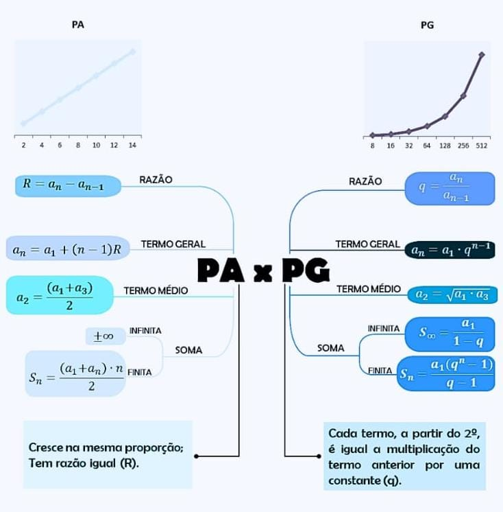

(EM13MAT303): Interpretar e comparar situações que envolvam juros simples com as que envolvem juros compostos, por meio de representações gráficas ou análise de planilhas, destacando o crescimento linear ou exponencial de cada caso.
(EM13MAT507): Identificar e associar progressões aritméticas (PA) a funções afins de domínios discretos, para análise de propriedades, dedução de algumas fórmulas e resolução de problemas.
(EM13MAT508): Identificar e associar progressões aritméticas (PG) a funções exponenciais de domínios discretos, para análise de propriedades, dedução de algumas fórmulas e resolução de problemas.
